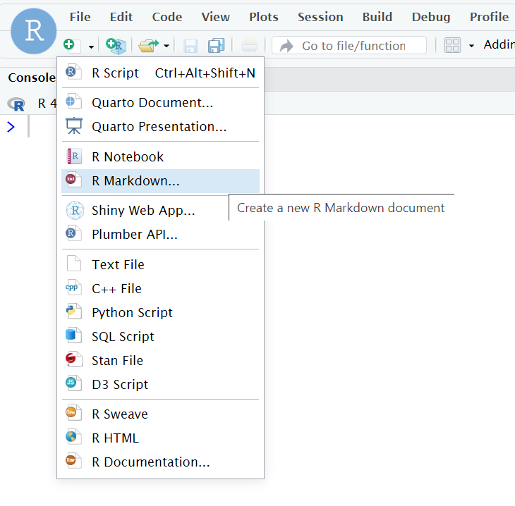
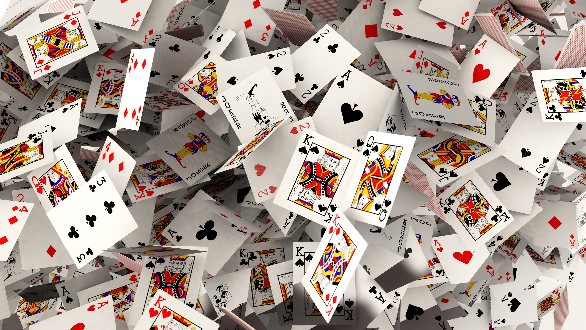

count(my_data_object_name, gain)6. Sampling, probability and binomial tests
Written by Tom Beesley & John Towse
Week 6 Lecture
Watch Part 1
Watch Part 2
Watch Part 3
Watch Part 4
You can download the lecture slides here
Reading
Chapter 8 of Howell
Pre-lab work
Ensure you have watched the above lecture content for Week 6.
PLEASE NOTE! The learnr server is currently down - we are trying to fix this asap. Complete the short learnr tutorial which will introduce you to running the binomial tests in R. You can find it here.
Working with “R Markdown” documents (.Rmd)
Today we will take a look at a different type of document file called “R Markdown” (the filetype is .Rmd). It’s like a .R script, only a bit more fancy! Today we’ll introduce a couple of basic features of these files and use this document for our tasks below.
Make sure you have a Week 6 folder
Once in that folder in the files pane, click “more” and “set as working directory”
Then click the new file button and select “R Markdown”

You’ll be asked to name this file. Leave the other options as they are and click OK.
When the new R Markdown file appears, try “knitting” it (the icon at the top with the ball of wool). You should get a nice output of the default R Markdown document.
Adding Code chunks
R Markdown documents allow you to freely type in text in the main body of the file. You are no longer restricted to putting comments after the “#” sign. Instead, when you want to put in R code you will need to create a “code chunk” within the document. These are places where you put your R code you want to run.
Try running the first code chunk (click the green arrow on the right). This will run the code and display the output (in the document and in the console).
.Rmd and .R differences
In a way, R Markdown files function in the opposite way to .R files:
.Rmd: you write normal text in the main part (like you’d do in a word processor), but you create a special “code chunk” for your code.
.R: you write code in the main body, and use the “#” to write normal text as a comment
Source mode vs. Visual mode
One of the nice things about working with R Markdown documents is that you can switch from the “coding” view (called “Source”) to something that is much more like a word processor (called “Visual”). You’ll see these two options in the top left corner of the document. Try flicking between them. Visual mode allows you to edit the document like a word-processor, making it easy to make formatting changes, add titles, insert images and tables, etc.
Creating an R Markdown for your lab work
Delete all of the script except the first title (## R Markdown)
Change this title to something more relevant: (e.g., ## Task 1 - Card Sampling task)
Knit your document to check it is still working!
Card sampling task

In the first task this week we will look at the sampling of events and we will apply the basic statistical test of the binomial test: binom.test()
Each table has a set of cards. These will be 13 red cards and 13 black cards - please check your set to ensure you have the right number of each colour (it doesn’t matter what suit the cards are).
We are going to play a game in which one person chooses a set of these cards and biases the deck towards either red or black. The other members of the table have to try and work out which way the set is biased. To do this, they will draw samples from the deck.
The Experiment
Think of this as an experiment: there is something real out there in the world in our “population” (the cards). As an experimenter we are trying to estimate what is true about the world, and in order to do this we need to take samples. When you can only see the backs of the cards, that data is unobserved. But as we draw samples, we start to understand how the “world” is - whether it is biased towards red or black.
So each time you draw a card, you are observing one data point from the population, and based on the data you collect (your samples) you are going to draw an inference about what is true about the population.
Set up and instructions:
One person on each table should act as the “world” (the person who biases the cards). Congratulations, you are God! This person will determine what is true about the state of things in the world. This means they control what is contained in the deck of cards.
For each experiment, this person secretly looks at the cards, and removes some cards to use in the experiment. For example, from the set of 26 cards, they might choose to remove 4 black cards. The deck is now biased towards red (13 red; 9 black).
It’s important that no one sees what the cards are (the ones you’ve kept, or the ones removed). Shuffle the cards so they are ready to be sampled.
The remaining people (1 or more) will act as the experimenters. Your job is to draw samples and work out whether you think the deck is biased or not towards either red or black.
Now copy the following text and code to your R Markdown document to record your work:
### Experiment 1
Number of samples:
Total red cards found:
Total black cards found:
Conclusion:
The true bias was:
```{r}
binom.test(x, n) # x is the number or red or black; n is the sample size
```Running each experiment
Do these steps for each experiment:
The “World” removes some cards from the full deck (the number and colour of the cards removed is up to them). They shuffle the chosen cards ready to start the “experiment”.
The “Experimenters” pre-register their sample size. That is, they state how many cards they are going to draw.
Draw samples one at a time (each experimenter can take one card, to speed things up).
Important!
Make sure you replace all the cards each time you draw samples. The world/dealer should also give the pack a quick shuffle.
Do step 3 until you have collect the sample size you chose
Once you have all the samples, the experimenters should draw a conclusion based initially on their own “gut feeling” about the data. Do you think the deck was biased towards red, black, or was it unbiased?
Change the
binom.test()code to provide a statistical result. Note the “p value”. Was this result unusual? How likely were the data given the null hypothesis?The “world” can then reveal the hidden cards. Was the deck actually biased or not? How does this sit with a) your initial conclusions, and b) the result of the binomial test?
Complete your record log in the .Rmd file. Feel free to Write a short statement about what you found in this experiment.
Repeat all of the above steps (1-8) for a new experiment, making sure that you try different parameters for the experiment. So vary a) how many cards are removed from the deck, b) the combination of cards removed from the deck, and c) the pre-registered sample size. Feel free to swap the roles around.
Once you’ve conducted a few experiments, discuss on your table the results you found. It might be useful to think about the following things:
were there times when your intuitions were different to the statistical result? For example, you were sure there was a bias, but in fact the statistics told you this was not that unusual (p was > .05)?
were there times when the deck was actually biased, but you failed to prove this with your experiment (you failed to see p < .05)? Do you remember what this type of error is called?
were there times when the deck was not biased, but the test result suggested it was (p < .05)? Do you remember what type of error this is called?
Risky and safe decisions
For the second exercise today we will look at data from the survey on “risky and safe decisions”. You may remember that you were asked the following question:
We then asked you a similar question:
We’ve called these “gain” and “loss”, because in the first scenario you’re being asked about a chance to gain money, while in the second, it’s about a chance to lose money. Note that the “expected utility” of the choices is equivalent:
That’s to say, on average, you’ll end up with +£100 for the two cases in the gain scenario, or -£100 for the two cases in the loss scenario.
But what do people actually pick? Well people tend to be risk-averse, choosing the safe option overall. But interestingly, the safe option is picked far less when the scenario is presented as a loss. People seem to want to take the risk of potentially not losing anything (but maybe losing more).
Let’s look to see if you showed the same pattern!
Create a new section of your markdown, giving it a suitable header
Create a new code chunk by clicking the “Code” menu, then “Insert Chunk”
You can download the data from this link, then upload it into the server.
Add a
read_csv()command to read the data into the environment.
Reading CSVs
- Remember to set the working directory so R knows where the file is
- Remember to assign (<-) to a new data object and give this a sensible name
View the data, and see that the columns represent the gain and loss scenarios. The values represent the choices people made.
Use the
count()function to count the number of “safe” and “risky” choices that were made for our sample
We can now tell whether, in our sample, people tended to play it safe or take the risky choice. Did the sample have a meaningful bias towards one type of decision? If they didn’t we’d expect it to be a 50/50 split between safe and risky (people might make their choice at random). Use the
binom.test()to look at whether the result would be expected by chance, noting the p value that is found.Write a sentence or two after your code to explain what this result means.
Repeat for the data from the loss column. Was the p value < .05 here? Again, write a sentence or two to explain what this means.
Week 6 Quiz
You can access a set of quiz questions related to this week here.